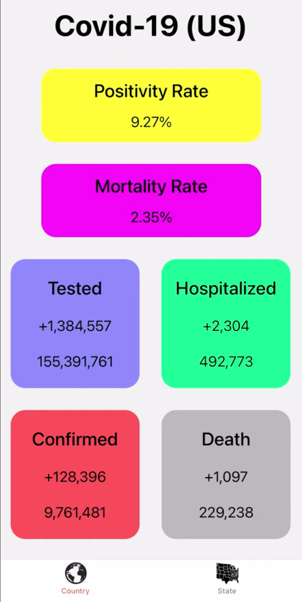

Wingshan Tam
Computer Science Student at Northwestern University
Resume
—Software Projects—

HTML, Javascript, CSS
In recent weeks, the United States is experiencing spikes of cases from the Covid-19
because of the unawarness in the severity of the pandemic.
This web app is a convenient way for users
to check up-to-date Covid-19 statistics on the internet.
Through these statistics, people would be aware of the seriousness of the
pandemic and reflect on it personally.
HTML, Javascript, CSS
ExtraOrdinary was designed to advocate, support, and provide resources
for people with special needs in communities across America.
The website also aims to combat the common yet false stereotypes and
assumptions about people with disabilities and encourage peer interaction.